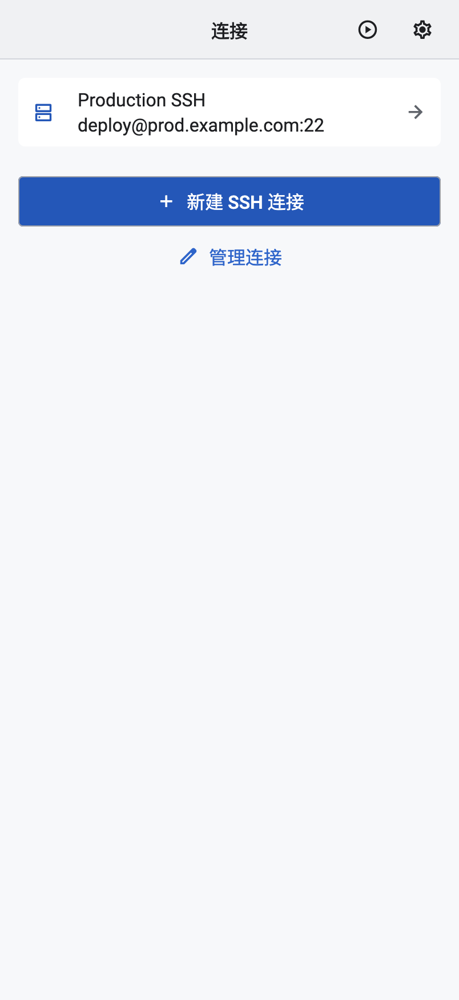
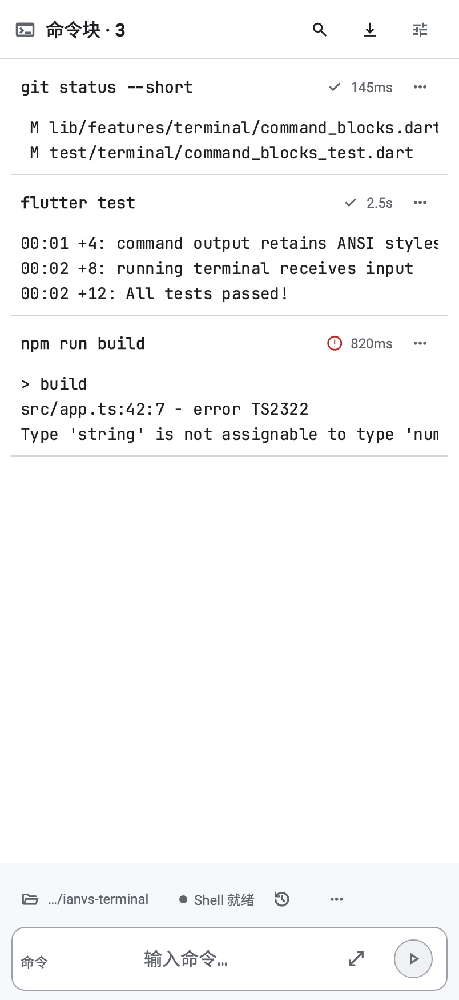
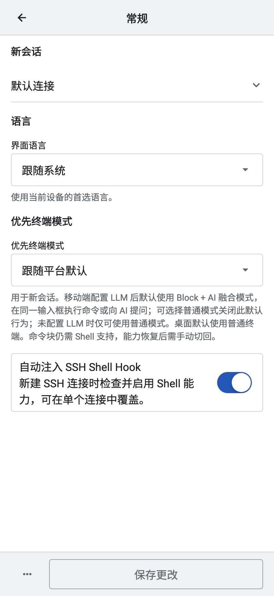

<!doctype html><html lang="zh-CN"><meta charset="utf-8"><meta name="viewport" content="width=device-width,initial-scale=1"><title>iOS · 连接 / 终端 / 文件 / 设置</title><style>*{box-sizing:border-box}body{margin:0;background:#f3f4f7;color:#172235;font:15px -apple-system,BlinkMacSystemFont,sans-serif}main{max-width:1280px;margin:auto;padding:28px}h1{font-size:29px;letter-spacing:-.6px;margin:0 0 12px}h2{font-size:22px;margin-top:28px}p{color:#526075;line-height:1.65}nav{display:flex;gap:8px;flex-wrap:wrap;margin:20px 0}a{color:#235bc4}nav a,button{background:#fff;border:1px solid #cfd6e1;border-radius:9px;padding:10px 14px;text-decoration:none;color:#235bc4;cursor:pointer}figure{margin:0}.shot{position:relative}.shot img{width:100%;display:block}.before{display:flex;gap:16px;justify-content:center}.before figure{flex:1;min-width:0}.before img{width:100%;display:block}.before figcaption{padding:8px;font-weight:600}.box{position:absolute;border:2px solid #bd4b15;border-radius:6px}.box b{position:absolute;left:-14px;top:-14px;width:28px;height:28px;border-radius:50%;background:#b8450e;color:white;border:2px solid white;text-align:center;line-height:24px;font-size:13px}.notes{display:grid;grid-template-columns:repeat(3,1fr);gap:12px;margin-top:16px}.notes div{background:white;padding:16px;line-height:1.6;border-left:3px solid #bd4b15}table{border-collapse:collapse;width:100%;font-size:14px;background:white}th,td{padding:14px;text-align:left;vertical-align:top;border-bottom:1px solid #e0e4ec;line-height:1.6}th{background:#e9edf4}td:first-child{font-weight:600;min-width:140px}.notice{border-left:4px solid #235bc4;background:#eaf0fc;padding:14px 18px;line-height:1.6}.warn{background:#fff6e7;border-left:4px solid #bc7420;padding:14px;margin:16px 0;line-height:1.6}details{margin:20px 0}summary{font-weight:600;cursor:pointer;padding:12px 0}footer{margin:28px 0;color:#627086;font-size:13px;line-height:1.6}.cards{display:grid;grid-template-columns:repeat(2,1fr);gap:16px}.cards a{padding:22px;background:white;border-radius:16px;text-decoration:none}.cards strong{display:block;font-size:20px;margin-bottom:10px}.hero{max-height:600px;object-fit:contain;width:100%;background:#e8edf4}@media(max-width:800px){main{padding:16px}.notes,.cards{grid-template-columns:1fr}table{display:block;overflow:auto}.before{gap:6px}}@media print{nav,button{display:none}}</style><main><h1>iOS · 连接 / 终端 / 文件 / 设置</h1><nav><a href="index.html">总览</a><a href="history.html">历史</a><a href="ios-core.html">iOS 核心</a><a href="ios-support.html">iOS 其他</a><a href="mac-core.html">Mac 核心</a><a href="mac-support.html">Mac 其他</a><a href="states.html">深色与状态</a><a href="tokens.html">完整标注规范</a></nav><div class="notice">当前组件截图 → 新方向概念图。点击图片查看原尺寸；橙色标注包含设计调整和图稿待修正点。</div><details open id="current"><summary>修改前 · 当前界面</summary><div class="before"><figure><a href="assets/iOS-light-portrait-shell-home.png"></a><figcaption>D · 连接</figcaption></figure><figure><a href="assets/iOS-light-portrait-blocks.png"></a><figcaption>E · 终端</figcaption></figure><figure><a href="assets/iOS-light-portrait-sftp.png"></a><figcaption>F · 文件</figcaption></figure><figure><a href="assets/iOS-light-portrait-settings-general.png"></a><figcaption>G · 设置</figcaption></figure></div></details><h2>设计方案 · 编号标注</h2><button onclick="document.querySelectorAll('.box').forEach(e=>e.hidden=!e.hidden)">显示 / 隐藏标注</button><p>数字与参数以本页规范为准，概念像素不作为精确测量依据。</p><div class="shot"><a href="assets/ios-support.png"></a><div class="box" style="left:1%;top:16%;width:23%;height:12%"><b>D</b></div><div class="box" style="left:26%;top:13%;width:23%;height:45%"><b>E</b></div><div class="box" style="left:51%;top:13%;width:23%;height:26%"><b>F</b></div><div class="box" style="left:76%;top:17%;width:23%;height:63%"><b>G</b></div></div><div class="notes"><div><strong>D</strong><br>名称17、地址15，快速连接与编辑入口保留；不增加假状态。</div><div><strong>E</strong><br>终端保持连续输出；成功次级灰，失败图标+文字；代码不得装饰性截断。</div><div><strong>F</strong><br>路径导航压缩；文件行52，图标20；无可靠大小/时间就不显示。</div><div><strong>G</strong><br>设置按任务分组；长说明在可发现的详情中保留，避免大段常驻。</div></div><div class="warn">导出、筛选等现有终端动作可收进更多菜单，但不能移除。外观和安全设置共用 G 的分组规则；此处没有逐项绘制所有设置子页。</div><h2>精确设计目标与行为保留</h2><table><thead><tr><th>场景</th><th>当前问题</th><th>拟调整</th><th>目标参数</th><th>必须保留</th></tr></thead><tbody><tr><td>D · 连接入口</td><td>名称地址同权重；大按钮抢占视线</td><td>白色分组列表，名称主/地址次；工具栏保留快速连接</td><td>名称17/600，地址15；行72起；触控44；新建为单一主动作</td><td>编辑与快速连接都可达；不添加假在线状态；空列表展示新建入口</td></tr><tr><td>E · 终端命令块</td><td>成功、耗时、工具栏争夺注意力</td><td>保留连续输出；弱化成功；失败用图标+文字</td><td>命令15等宽600，输出14–15等宽；块间16；分隔线1物理像素</td><td>长行横向滚动；不改ANSI语义；输入/滚动锚点/选择复制保留；终端不强制卡片化</td></tr><tr><td>F · SFTP</td><td>连接、路径、操作分占多条工具栏</td><td>压缩路径导航；文件连续列表；操作进菜单</td><td>文件名17；图标20；行52；路径最少44高</td><td>不虚构大小/修改日期；保留首页/上级/刷新；长文件名中间省略且可查看全名</td></tr><tr><td>G · 常规/外观/权限</td><td>同名标题重复、解释大段常驻</td><td>原生设置式分组；少量摘要+展开详情</td><td>分组标题13次级；选项17；helper13；组距24</td><td>详情保留全部含义；权限不得为美观默认放宽；外观选项仍含跟随系统/浅色/深色</td></tr></tbody></table><footer>2026-11-01 · 视觉设计评审稿，非已实现界面。当前图来自真实 Flutter 组件测试夹具，方案图为 Image Gen 概念稿；编号和参数为设计标注，不是已测量值。<br>实际功能、文案与安全守卫以规范表为准；后续只用模拟器验证，不操作手机。</footer></main></html>